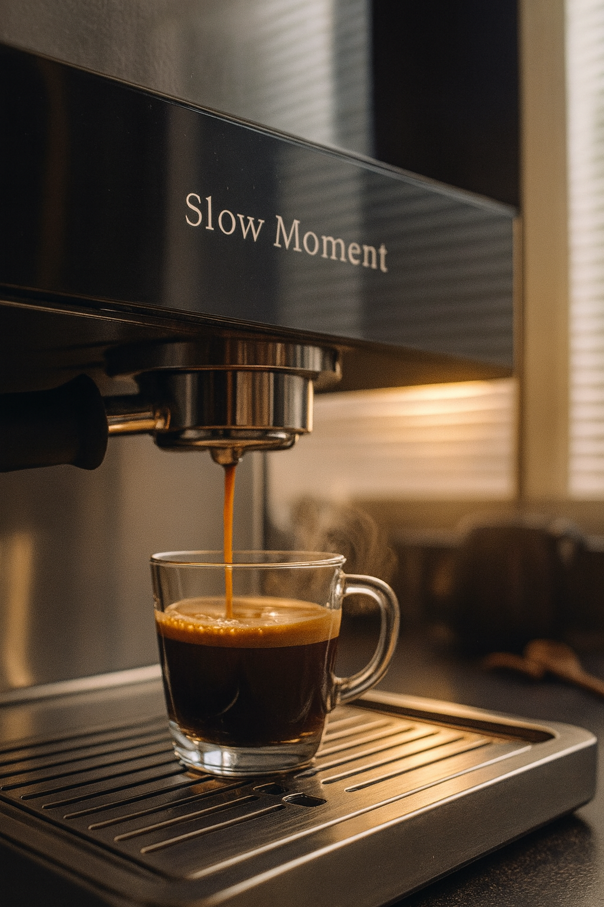
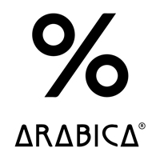
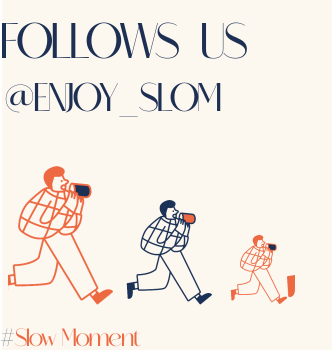

SLOM MOMETN

Slow Moment, Slow Life
일상의 속도를 잠시 내려놓고, 한 컵의 따뜻함에 집중하는 공간.
SLOM은 바쁜 하루 속에서도 차분한 숨을 고를 수 있는 여유를 제공합니다.
당신의 순간이 더 편안해지는 시간, 여기서 시작됩니다.
조용한 음악과 은은한 조명 속에서 스스로에게 온전히 집중해보세요.
천천히 머물수록 마음에 작은 평온이 차오르는 경험을 선물합니다.


-

SLOW
천천히, 그리고 깊게.
모든 순간은 잠시 멈추는 것에서 시작됩니다.
우리는 커피 한 잔을 통해
하루의 온기를 느끼는 여유를 전합니다. -

WARM
한 모금마다 스며드는 따뜻함.
향과 공간, 분위기까지 당신의
감각을 부드럽게 감싸는 경험을 만듭니다. -

BALANCE
일상 속 균형을 찾는 순간.
공간과 맛, 그리고 고요함이 조화롭게 어우러져
삶이 다시 정돈되는 경험을 제공합니다.
Our Bean Story
SLOW MOMENT COFFEE BEANS
한 알의 체리가 자라는 순간부터, SLOM의 커피는 단순한 원두가 아닌 ‘시간이 만든 맛’을 품게 됩니다.
풍부한 토양, 안정적인 강우량, 그리고 농부의 꾸준한 손길이 더해지며 체리는 천천히 익어갑니다.
빠른 성장을 유도하는 대신, 자연이 허락하는 속도를 존중하며 여유 있게 숙성된 체리만을 수확합니다.
수확된 체리는 햇살 아래에서 며칠, 혹은 몇 주간 말려가며 고유의 향미를 완성하고, 그 여정에서 스며든 자연의 결이 SLOM 한 잔의 깊은 밸런스를 만들어냅니다.
하루를 여는 첫 모금부터, 늦은 밤 잠시 쉬어가는 한 잔까지. SLOM의 세 가지 블렌드는 당신의 속도를 따라가는, 슬로우 라이프를 위한 커피입니다.

Feel your moment • Designed for calm living • SLOM lifestyle collection
Designed for Slow Living


Lunch Time, Slow Moment
SLOM Archive
2025 - 12- 16(화)
SLOM 커피 종로점
SLOM의 첫번째 이야기
미식의 감도를 일상으로 확장한다’는 의미를 담은 협업 시리즈 파도 첫 번째 이야기 《공존》이
SLOM커피 종로점에서 열렸습니다.
SLOM커피 × 소공간 × 코르 파스타 바가 함께 한 자리에서,
한식과 이탈리안, 그리고커피가 어우러진 특별한 메뉴를 선보이며,
해운대의 저녁 풍경 속에서 음식과 사람,
시간이 하나로 녹아드는 순간을 나눴습니다.
<공존의 저녁> 클래식 공연에서는 바리톤과 피아노, 바이올린, 첼로가 조화를 이루며
따스한 울림과 깊은 여운을 전했습니다.
서로 다른 것이 모여 하나의 흐름을 이루는 ‘공존’의 의미를 다시금 되새길 수 있었던 뜻깊은 시간이었습니다.
2025 - 12- 19(금)
SLOM 커피 해운대점
Drip Coffee, Slowly
드립 커피는 서두르지 않는 선택에서 시작됩니다.
잘 분쇄된 원두 위로 따뜻한 물이 닿는 순간, 잠들어 있던 향이 천천히 깨어납니다.
SLOM은 이 첫 순간을 기다림이라 부르고,
한 잔의 흐름을 여기서부터 시작합니다.
먼저 소량의 물로 원두를 적시고 잠시 멈춥니다.
30초 정도의 짧은 시간 동안 커피는 스스로 숨을 고르고,
그다음 물을 원을 그리듯 천천히 나누어 붓습니다.
급하지 않게, 흐름이 끊기지 않도록 — 물과 커피가 같은 속도로 만나는 과정입니다.
오늘의 속도로, 오늘의 한 잔을 천천히 내려보세요.
SLOM SUPPORT
-
카페 이용은 어떻게 하면 되나요? 예약이 필요한가요?
SLOM은 예약 없이 자유롭게 방문하실 수 있는 공간입니다. 원하시는 시간에 들러 커피와 함께 천천히 머무르며 일상의 속도를 잠시 내려놓는 시간을 즐겨보세요.
-
매장 이용 시간과 이용 방식은 어떻게 되나요?
매장은 매일 10:00–22:00 운영되며, 운영 시간은 지점별로 상이할 수 있습니다. 예약 없이 자유롭게 방문해 각자의 속도로 편안한 시간을 즐기실 수 있습니다.
-
카페에서 어떤 메뉴를 이용할 수 있나요?
SLOM에서는 자체 블렌드 커피와 시즌 메뉴를 중심으로 부담 없이 즐길 수 있는 음료와 간단한 디저트를 제공합니다.
-
온라인 구매 후 배송은 얼마나 걸리나요?
온라인 스토어를 통해 구매하신 상품은 결제 완료 후 영업일 기준 2~3일 내 발송됩니다. 배송 일정은 지역 및 택배 상황에 따라 달라질 수 있습니다.
-
교환·환불은 어떻게 진행되나요?
상품 수령 후 7일 이내 고객센터를 통해 접수해 주시면 교환 및 환불 절차를 안내해드립니다. 자세한 내용은 이용 약관을 참고해 주세요.
friends of SLOM

- 


Instagram of SLOM
- 


Find Us Here
COMPANY